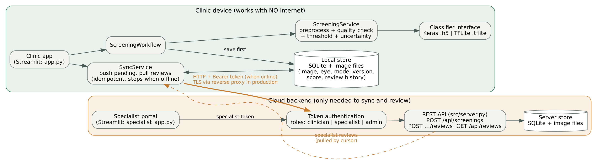
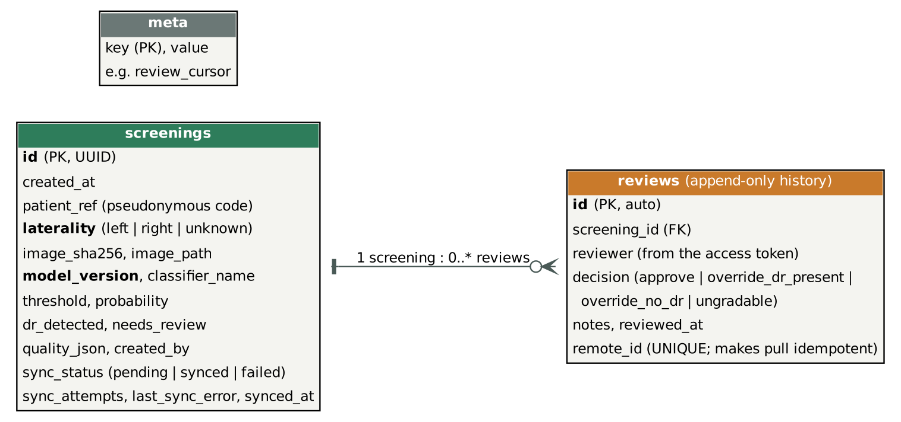

After the supervisor's review, the project was re-scoped from a three-disease Android system to a feasible offline research prototype: one user (a clinical officer at a rural primary health centre with intermittent connectivity), one condition (diabetic retinopathy, DR) and one complete demonstrable workflow (screen → save locally → sync → specialist review → decision returned). Depth on the offline architecture and an honest evaluation was preferred over breadth. Status of each planned feature:
| Planned feature | Intended purpose | Status | Evidence / justification |
|---|---|---|---|
| DR classifier (MobileNetV2 transfer learning) | Detect DR from a fundus photo | Completed | models/dr_screening_model.h5, notebooks/model_notebook.ipynb |
| 85% sensitivity / 80% specificity targets | Safe screening trade-off | Partial | Threshold algorithm built and tested (src/thresholding.py); outcome in section 4: FILL: MET / NOT MET |
| On-device inference (TensorFlow Lite) | Screen with no internet | Partial | TFLite and Keras back-ends agree within 0.05; runs on a laptop, not yet packaged for Android |
| Local offline storage | Keep records with no connection | Completed | src/storage.py: image, eye, model version, threshold, score, review history |
| Two-way offline→online sync | Upload queue; pull specialist decisions | Completed | src/sync.py; tested with connection drops |
| Flag uncertain / high-risk cases | Structured referral | Completed | ScreeningResult.needs_review (flagged or within 0.10 of threshold) |
| Specialist dashboard (approve / override) | Close the referral loop | Completed* | specialist_app.py; append-only history. *Streamlit instead of React |
| Cloud backend (FastAPI + PostgreSQL) | Central store and API | Partial | src/server.py: same REST contract on the standard library + SQLite; no extra services needed |
| Authentication and roles | Protect patient data | Partial | Bearer tokens, three roles, identity from token; no accounts, expiry or TLS |
| Admin analytics / account management | Observe referral patterns | Partial | Statistics endpoint only |
| Android app (React Native) | Mobile client | Not implemented | Replaced by Streamlit clinic app (app.py); logic lives in src/ so a mobile front end can reuse it |
| Glaucoma and cataract classifiers | Multi-disease screening | Not implemented | Out of reach in the time available; BaseClassifier allows adding them. Future work |
| Load balancer; usability study | Scale; test usability | Not done | Single-process prototype; no participants available |
| Image-quality check; tune/test evaluation (added) | Reject bad inputs; honest metrics | Added | src/quality.py, src/evaluation.py |


Workflow. The clinic app (app.py) takes a pseudonymous patient code, the eye and a fundus image. ScreeningWorkflow runs ScreeningService (decode → quality check → model → decision) and saves the result in SQLite before anything else. SyncService later pushes pending records to the REST backend and pulls specialist reviews. The specialist portal (specialist_app.py) lists flagged and borderline cases with the image, eye and model version, and records approve / override / ungradable decisions as an append-only history.
ImagePreprocessor now matches training (a silent source of error found by review).The original 180-line app.py (UI, model loading, preprocessing and inference in one script) was refactored into a package of 15 modules (about 1,570 lines in src/) plus two thin UI files. Principles applied:
| Principle | Where |
|---|---|
| Single responsibility / separation of concerns | One class per job: ImagePreprocessor, ImageQualityChecker, ScreeningService, ScreeningRepository, SyncService; UI files contain presentation only |
| Abstraction, polymorphism, open/closed | BaseClassifier with KerasClassifier and TFLiteClassifier; RemoteClient with ClinicClient; a new disease or back-end is added without changing callers |
| Dependency inversion / testability | ScreeningService and SyncService receive abstractions, so tests inject a stub classifier and a fake remote |
| Inheritance and reuse | ApiClient (transport, auth, error translation) → ClinicClient, SpecialistClient; the same repository class serves the device and the server |
| Encapsulation, immutability | Frozen dataclasses for results and records; private connection handling in the repository; enums for laterality, decisions and roles |
| Error handling | Domain exceptions (InvalidImageError, ImageQualityError, RemoteUnavailableError, ...) so each caller reacts precisely; TensorFlow imported lazily so most code runs without it |
Strategies. (1) Unit tests for each class using a stub model. (2) Integration tests that start a real backend on a free port and exercise authentication, roles, validation, request limits and the whole screen→sync→review loop. (3) Connectivity/failure tests (dead server, connection dropped mid-sync, wrong token, rejected record). (4) UI smoke tests for both pages. Suite: FILL: N tests, all passing (pytest). I also ran mutation checks: deliberately breaking four behaviours; three were caught immediately, and the fourth (sync hammering a dead connection) exposed a missing test, which I added.
| Input / situation | Result |
|---|---|
| Corrupt file; blank or tiny image | Rejected with a clear message; nothing saved |
| Blurry, dark or non-fundus image | Screened with a warning |
| Patient code that looks like a name | Rejected (data minimisation) |
| Server unreachable / wrong token / wrong role | Records stay pending, one attempt per cycle; 401 / 403 |
| Tampered checksum, bad JSON, oversized body, duplicate upload | 400 / 400 / 413 / stored once |
Bugs found and fixed: preprocessing mismatch with training; a race in which a duplicate-id upload could delete an existing image (images now move into place only after the database insert succeeds); sync retrying a dead connection once per queued record.
Data: public EyePACS + APTOS + Messidor-2 collection, binary label (DR grades 1–4 vs 0). It has no patient identifiers and contains augmented copies, so a patient-separated split was impossible and all figures are optimistic. Threshold tuned on one stratified half of a held-out set of images the model never trained on; metrics below are from the other half, with 95% bootstrap intervals.
| Operating point | Threshold | Sensitivity | Specificity | Precision | AUC |
|---|---|---|---|---|---|
| Default 0.5 | FILL from scripts/calibrate_threshold.py | ||||
| Tuned for 85% sensitivity | FILL (with 95% CI); targets MET / NOT MET | ||||
| Flag everyone / flag no one | FILL (baselines) | ||||
Reference only: Gulshan et al. (2016) reported 90.3% sensitivity and 98.1% specificity with a far larger model and different data and operating point, so the comparison is not like-for-like. Raising sensitivity lowers specificity, producing more referrals; this is the accepted screening trade-off.
| Device (CPU / RAM / OS) | Keras model (ms) | TFLite model (ms) | Model size H5 / TFLite | Preprocess + quality + save (ms) | Sync, 50 records |
|---|---|---|---|---|---|
| FILL: high-end laptop | FILL | FILL | 9.9 MB / 2.6 MB | FILL | FILL |
| FILL: lower-spec device | FILL | FILL | 9.9 MB / 2.6 MB | FILL | FILL |
Compatibility: the same workflow was run in FILL: Chrome / Edge / Firefox versions and on a phone browser via the local network URL; FILL: result. Improvements made after testing: FILL: what you changed.
The prototype is preliminary screening support, not a diagnosis, and is not clinically validated. Data are retrospective and public, with no patient identifiers, so reported performance is an optimistic in-distribution estimate; no external evaluation or usability study was done; security is prototype-grade; only DR is covered and the client is not an Android app. What the project does show is a tested, offline-first architecture in which screening never depends on the network, no data is lost when connectivity fails, specialist decisions return with a full history, and every claim about the model is separated from the software tests and qualified by its limits. Future work: glaucoma and cataract, packaging the TFLite model in an Android app, an external dataset, and a usability study.
Reference: Gulshan, V. et al. (2016). Development and validation of a deep learning algorithm for detection of diabetic retinopathy in retinal fundus photographs. JAMA, 316(22), 2402–2410. https://doi.org/10.1001/jama.2016.17216